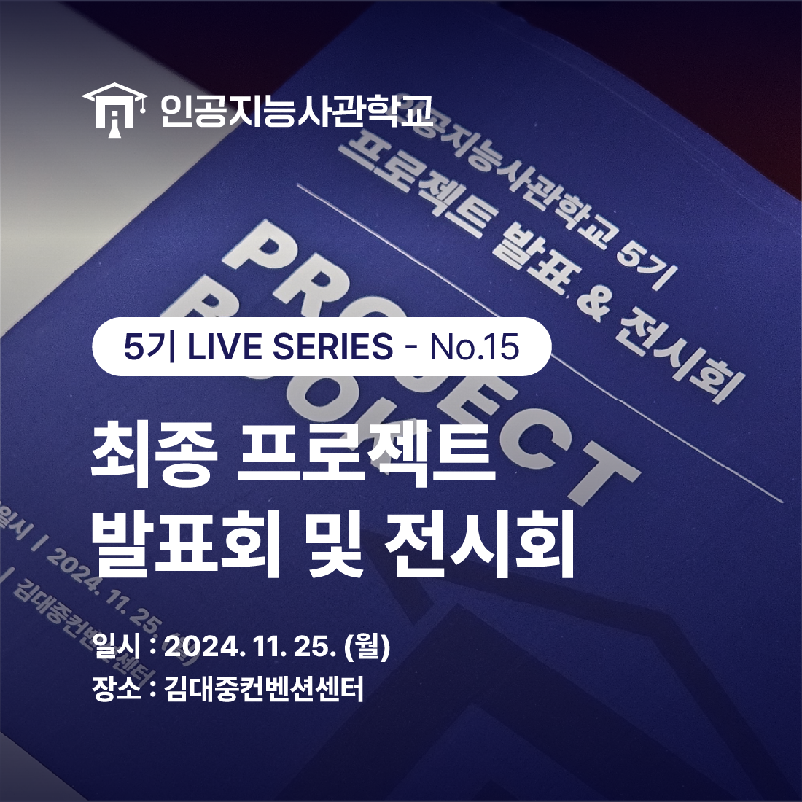
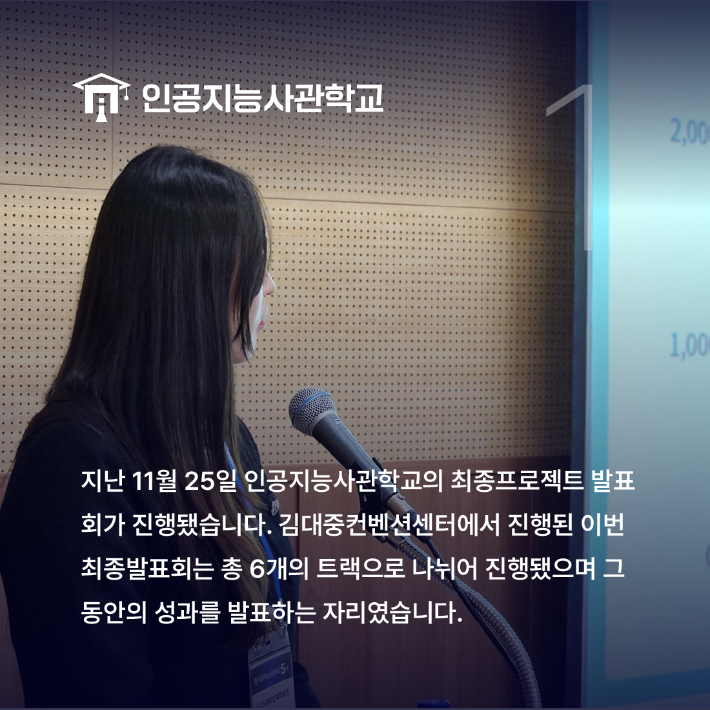
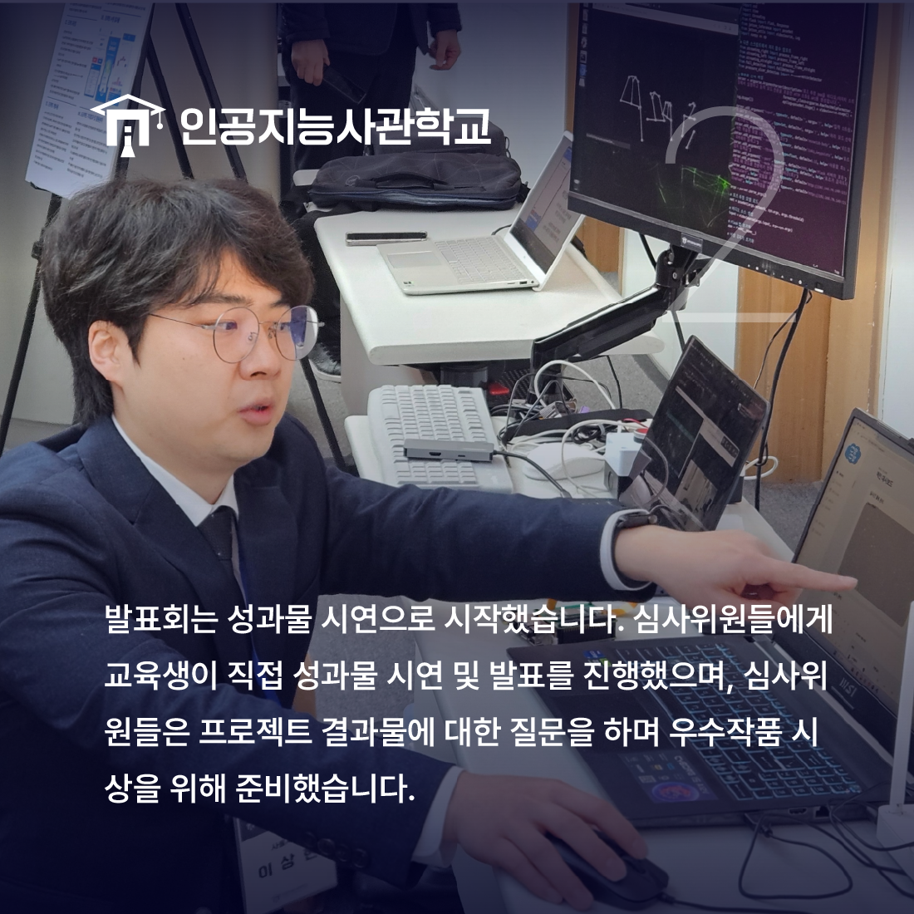
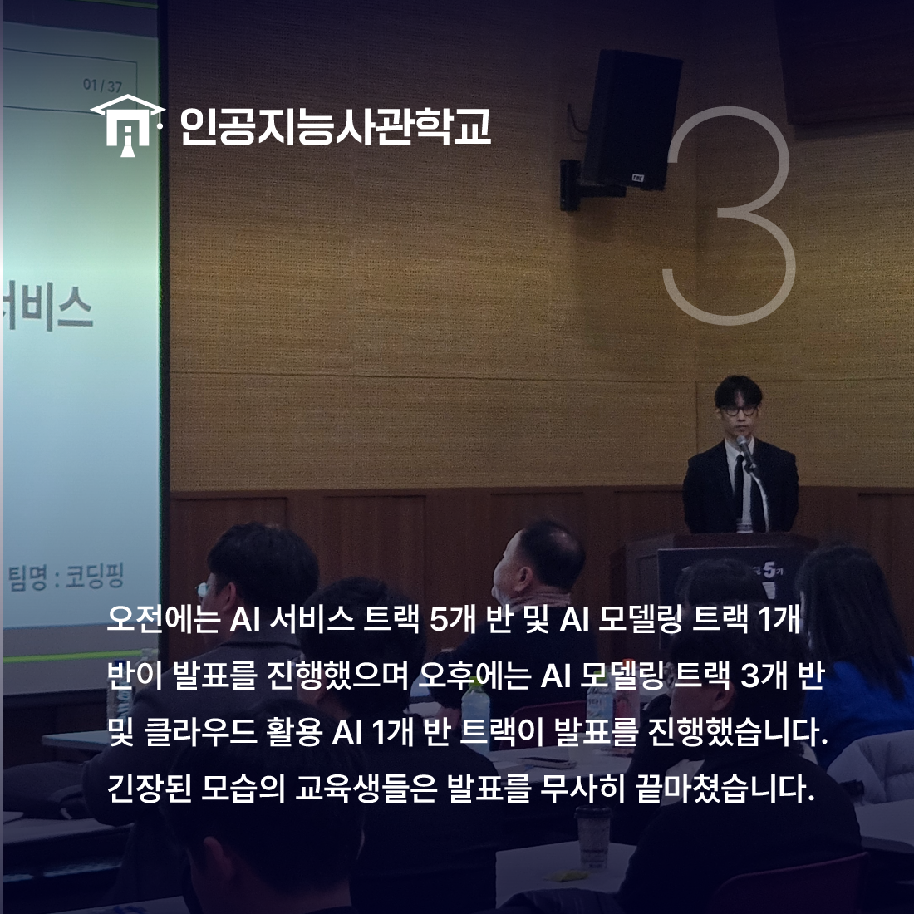
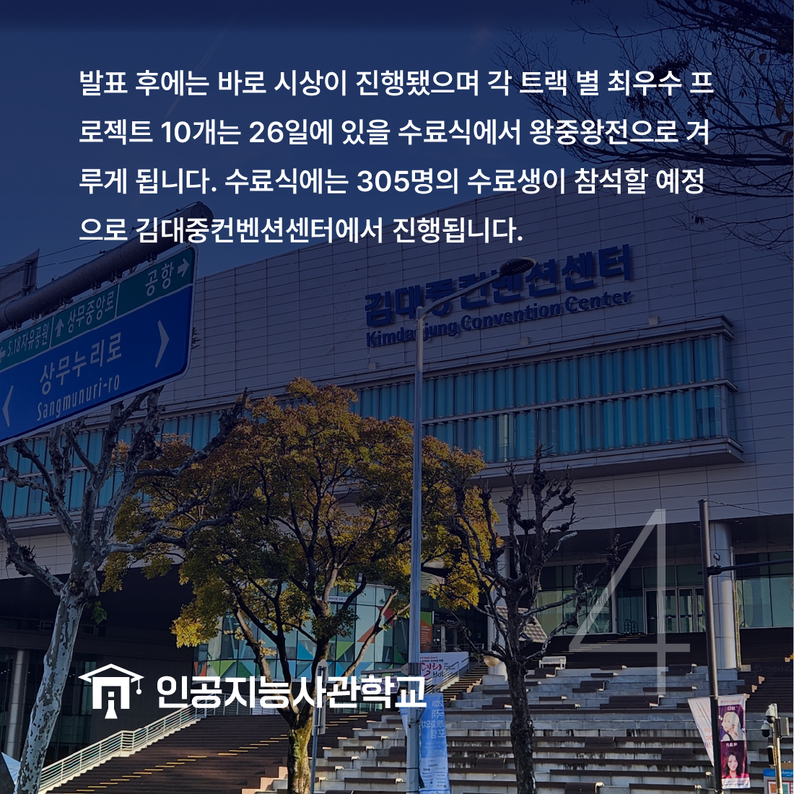

안녕하세요! 인공지능사관학교입니다. 😆

지난 11월 25일에는 인공지능사관학교 5기의
<최종 프로젝트 발표회>가 있었습니다.

김대중컨벤션센터에서 진행된 이번 발표회는
총 10개 반이 5개 트랙*으로 나뉘어 발표를 진행했으며
약 6개월 간의 성과를 발표하고 나누는 자리였습니다.
*총 6개 트랙이 아닌 5개 트랙으로 정정합니다.

PT 전 성과물 시연회가 먼저 진행됐습니다.
교육생은 심사위원들에게 성과물 시연을 진행하고
프로젝트에 대한 질의응답 시간을 가졌습니다.

오전과 오후로 나뉘어 발표를 진행했으며
트랙은 아래와 같습니다.
▶track1 - 웹기반 인공지능 Track1_A, 웹기반 인공지능 Track2_B
▷track2 - 웹기반 인공지능 Track1_B, 웹기반 인공지능 Track2_A
▶track3 - 사물지능, 앱 기반 인공지능
▷track4 - 클라우드 활용 AI, 시각지능 A
▶track5 - 언어지능, 시각지능 B

발표 이후 최우수 10팀은 26일에 진행되는 수료식에서
왕중왕전을 거치게 됩니다.
수료식에는 300여 명의 수료예정 교육생과
강기정 광주시장, 오상진 인공지능산업융합단장 등이
참여할 예정입니다.